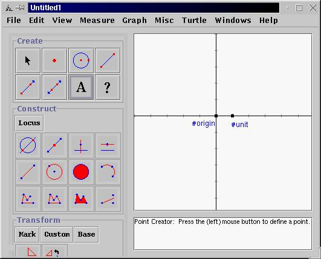
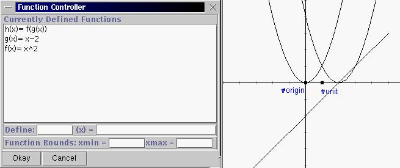

1 Start up Geometry Explorer and choose "Show Axes" under the "Graph" menu. We will be graphing various functions in this coordinate system. Notice the points labeled "#origin" and "#unit". The origin point can be moved to move the entire coordinate system. By moving the unit point one can alter the apparent scale of the coordinate system.

2. Now, choose "Add Function to Graph..." under the "Graph" menu. A dialog box will pop up which will allow us to define a function f(x)=x^2. To do this we type the name of the function and the value in the two text fields as shown:
Once we hit the "Okay" button our function will show up in the main program window.
3. Now, we will create a new function g(x) = x-2. Go back to the "Graph" menu and select "Add Function to Graph..." and type in the definition of g. Instead of hitting the "Okay" button, just hit the return key and the new function will appear in the program window. Now type in a new function h(x) = f(g(x)), (i.e. the composition of f and g). Before you hit the return key, think about what h(x) should look like compared to the original function f. What should be the main difference in the two graphs?

4. Now, type in the definition for i(x) = g(f(x)), (the composition the other way). Should this graph be the same as the graph of h(x) = f(g(x))? Why or why not?
5. We are now going to use the "dynamic" capability of the Geometry Explorer software to look at this question of new functions from old. Close the function dialog and click on the segment tool in the main window. (The fourth button in the first row in the "Create" panel of buttons) Then, click somewhere in the white drawing window and drag to create a segment like AB below. After releasing the mouse, go to the "Measure" menu and click on "Length", which should be highlighted. A measurement of the length of segment AB will pop up in the window.
6. Now, go to the "View" menu and click on "Calculator..." to bring up a calculator as shown. You will see lots of buttons and a list of Measures on the right. We will be able to use the Length measure that we just defined as a parameter in the definition of a function. Click the "x" button then "-" , then double-click on the Length measure to define a function. Then, hit the "Evaluate" button to store this definition. Finally, hit the "Add to Canvas" button. Another dialog box will pop up asking for the name of this new function. Below we have called it "shift". Hit "Okay" and then close the Calculator window.
7. A new function representing x-length(AB) will appear in the main window. This is the line in red below. Now, choose "Add to Function Graph..." again in the "Graph" menu and create a new function new(x) = f(shift(x)). This is also shown below in red.
8. Experiment with dragging point B back and forth to see what happens to the two red functions as the length of AB changes. (Be patient, the motion may be a bit jerky). When the length of AB is 2.0 what happens? Given the results of this experiment, what will generally happen if we are given a function f(x) and we alter x by replacing it with x-c where c is some number? That is, what will happen to the graph of f(x), where will it move to? What if we replace x by x+2, what will happen then? Is the composite function g(f(x)) a simple motion of f(x) as well? If so, how does this motion differ from the motion of f under replacing x by x-c?